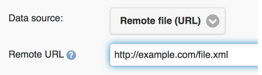
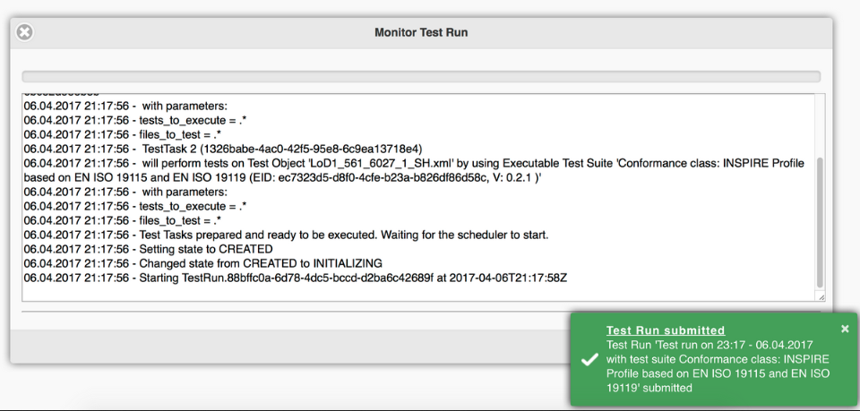
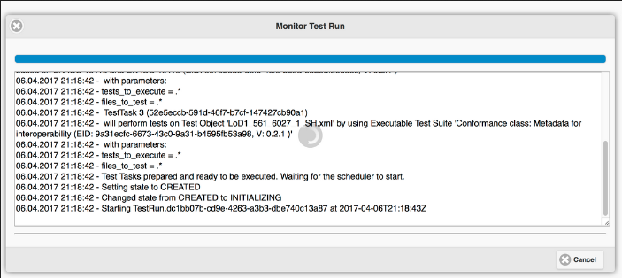
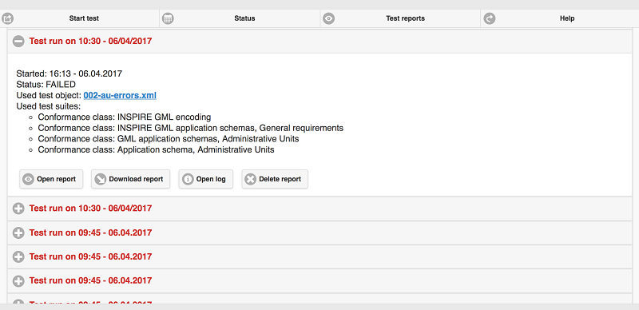

Snabbstart för ETF¶
Observera
Detta projekt ingår endast på OSGeoLives virtuella maskindisk (VMDK)
ETF är ett testramverk med öppen källkod för validering av spatiala data, metadata och webbtjänster i infrastrukturer för spatiala data (SDI). Utformningen av ETF drivs av tre mål: att vara användarvänlig, överensstämma med standarderna och kunna testa alla resurser i en SDI.
Denna snabbstart beskriver hur du gör:
navigera genom webbapplikationen
starta ett test
övervaka en testkörning
titta på och hantera testrapporter
Innehåll
Introduktion¶
Från menyn OSGeoLive Start väljer du . Det tar några ögonblick att starta upp programmet och en webbsida öppnas på http://localhost:9090/ETF
I sidhuvudet finns en meny med 4 sektioner, som var och en representerar olika vyer och funktioner:

Den första är Starta test. I detta avsnitt listas alla tillgängliga (dvs. installerade) Executable Test Suites. I detta avsnitt kan en Executable Test Suite väljas och köras mot ett testobjekt.
Den andra är Status. Här visas alla tester som för närvarande körs i systemet och det går att öppna en övervakningsvy för enskilda testkörningar för att kontrollera statusen för ett test som körs. Dessutom visas de komponenter som för närvarande är laddade under de test som körs.
Den tredje är Testrapporter. Här kan resultaten av alla genomförda tester kontrolleras, analyseras i detalj eller laddas ner.
Den fjärde är Hjälp. Den här är en länk till dokumentationen. I den finns guider för hur man använder alla ETF:s funktioner.
Starta testet¶
Val av testsvit¶
Landningsvyn visar de tillgängliga Executable Test Suites.

Ytterligare information om en testsvit kan hämtas genom att klicka på +-knappen.

Denna information:
Innehåller en beskrivning av testsviten.
Kan innehålla en länk till den abstrakta testsvit från vilken den exekverbara testsviten har härletts (källa).
Kan inkludera Test Suite-beroenden, som automatiskt körs med Test Suite i en testkörning (förkunskapskrav för överensstämmelseklasser).
Kan innehålla namnet på associerade taggar som används för att gruppera testsviterna i vyn.
Innehåller namnet på tillämpliga testobjektstyper (förklaras i nästa avsnitt).
Innehåller allmän information som version, författare och senaste redigerare, skapande- och ändringsdatum.
För att starta en testkörning måste en testsvit väljas genom att klicka på use-vippan på höger sida.

En Start-knapp visas när minst en testsvit har valts.
En testsvit är endast tillämplig på vissa testobjektstyper, vilka anges i beskrivningen. Flera testsviter kan väljas för en testkörning, men de måste vara tillämpliga på samma typ av testobjekt. När en testsvit har valts inaktiveras alla andra testsviter som har olika testobjektstyper.

En testsvit kan vara beroende av andra testsviter. Beroendena visas också i beskrivningen av testsviterna. Dessa beroenden utförs också automatiskt under testkörningen.
Ett klick på Start-knappen öppnar en ny vy där användaren tillfrågas om den målresurs som ska testas.
Konfiguration för testkörning¶

Fältet Label är obligatoriskt och förinställs automatiskt med aktuell tid och namn på de valda testsviterna. Etiketten kommer att visas i avsnittet Testrapporter och kan ändras för att göra det lättare att hitta rapporten igen efter en testkörning.
Hur vyn ser ut kan bero på vilka testsviter som har valts.
Filbaserade tester¶
Följande element visas när testsviter har valts som testar en eller flera testdatafiler.
Om File upload väljs som Data source kan en eller flera lokala filer väljas och laddas upp till ETF. ETF accepterar endast filer med filändelserna XML och GML samt ZIP-filer som innehåller dessa två filtyper.
Observera
Andra filer, t.ex. schemadefinitionsfiler, kan inte användas och ignoreras i tysthet av ETF!

Den maximala filstorleken som kan laddas upp visas när musen förs över frågetecknet.
Om de data som ska testas finns tillgängliga på webben kan de testas genom att ange en enda URL. Efter att Remote file (URL) har valts som Data source kan en Remote URL till antingen en XML-, GML- eller ZIP-fil anges.
Om URL:en kräver autentisering kan användarnamn och lösenord anges genom att klicka på Credentials.

Servicetester¶
Följande element visas när testsviter har valts som testar en tjänst.
URL:en för tjänsten måste börja med ”http://” eller ”https://”.

Om tjänsten kräver autentisering kan användarnamn och lösenord anges genom att klicka på Credentials.
Beroenden och parametrar¶
Knappen Test Suites visar grundläggande information om de valda testsviterna och - om tillämpligt - om de direkta beroendena.

Om testet accepterar parametrar visas de i avsnittet Test Suite Parameters. Valfria parametrar kan visas genom att klicka på knappen Optional Parameters. En beskrivning av parametrarna visas när musen förs över frågetecknet.
Observera
I de flesta fall kan de förinställda standardvärdena användas.

Slutligen kan testet startas genom att klicka på knappen Start. Vyn ändras då automatiskt till vyn Monitor Test Run.
Övervaka testkörningar¶
När en testkörning har startats visas vyn Monitor Test Run.
Den blå stapeln visar framstegen.
I konsolområdet visas informations- och resultatmeddelanden. Testkörningen kan avbrytas genom att klicka på knappen Cancel.
Vyn kan stängas, t.ex. med X-knappen i det övre vänstra hörnet. Även när webbläsaren är stängd fortsätter testkörningen på servern.
Om du vill öppna vyn Monitor Test Run igen efter att den har stängts väljer du avsnittet Status i menyraden. Avsnittet Status visar alla pågående tester. Om du klickar på en testkörning öppnas vyn Monitor Test Run för den testkörningen.

När en testkörning avslutas och vyn Monitor Test Run öppnas, visas testrapporten automatiskt.
Testrapporter¶
I avsnittet Test Reports visas alla rapporter som har genererats från testkörningarna.
Genom att klicka på +-knappen visas information om en testkörning, starttid, status för testresultatet, namnet på testobjektet och de använda testsviterna.
En testrapport kan öppnas igen genom att klicka på knappen Öppna rapport eller laddas ner som HTML-fil genom att klicka på knappen Ladda ner rapport.
Loggfilen för testkörningen kan inspekteras med knappen Open log. Genom att klicka på knappen Delete report raderas rapporten permanent.
Inspektera testrapporter¶
Överst i en testrapport visas allmän information, inklusive den övergripande statusen för testresultatet, starttiden, varaktigheten och en tabell som sammanfattar statusen för alla tester på flera nivåer.

Testrapporterna är interaktiva. Omkopplaren Show kan användas för att filtrera Only failed eller Only manual tester. Alternativet All avaktiverar filtret.
Omkopplaren Level of detail används för att visa mer eller mindre information i rapporterna.

Testresultaten sammanfattas hierarkiskt i en rapport. På den översta nivån finns testsviterna.
Genom att klicka på en testsvit visas en beskrivning och alla tester på lägre nivå i den testsviten. Fel i en testsvit kan omedelbart identifieras med hjälp av den röda färgen. Antalet misslyckade tester visas i det övre högra hörnet.

Den gröna färgen indikerar ett godkänt test. Godkända tester, som kräver ytterligare manuella teststeg som inte kunde automatiseras, är orangefärgade. Den orangea färgen kan också indikera ett test som har hoppats över eftersom det är beroende av ett annat test som har misslyckats. Den exakta statusen finns under beskrivningen.
Antalet nivåer beror på vilket testobjekt som testas. Om servicetester har utförts ser hierarkin ut enligt följande:
Exekverbara testsviter
Testmoduler (buntar testfall)
Testfall (buntar ihop teststeg)
Teststeg (interaktioner med tjänsten, buntar Test Assertions)
Testpåståenden (atomära tester)
I ett filbaserat test finns inte testmoduler och teststeg och de visas inte i rapporten.
Varje test listar kraven och ger en beskrivning av hur de testas. Testet kan innehålla en länk till en abstrakt testsvit, från vilken testet har härletts (Källa).

Assertions står för atomära testfrågor på den lägsta nivån. Misslyckade, rödfärgade påståenden visar felmeddelanden i avsnittet Messages.

Det kan också finnas användbar information på nästa högre nivå, som till exempel svaret från en tjänst på Test Step-nivån (notera länken Öppna sparat svar i rapporten).

Resurser¶
Med hjälp av instruktionerna ovan hittar du nedan en fördefinierad uppsättning resurser som du kan testa i ETF:
GML-datauppsättningar: vissa fördefinierade datauppsättningar kan laddas ner från <https://github.com/etf-validator/OSGeoLive-ETF/tree/main/resources/GML-data-sets>`__.
WMS-tjänster: en lista över tjänster finns tillgänglig här <https://github.com/etf-validator/OSGeoLive-ETF/tree/main/resources/WMS-services>`__.
WFS-tjänster: en lista över tjänster finns tillgänglig här <https://github.com/etf-validator/OSGeoLive-ETF/tree/main/resources/WFS-services>`__.
Observera
Vissa av de GML-datauppsättningar som anges ovan klarar inte alla tester, så du kan försöka åtgärda dem (baserat på de fel som rapporteras i testrapporten) innan du validerar dem igen tills alla tester lyckas.
What next?¶
Detta var bara en mycket kort översikt över ETF. Det finns mer information i demoinstallationen och på ETF GitHub-utrymmet.
Vänligen kontrollera också: